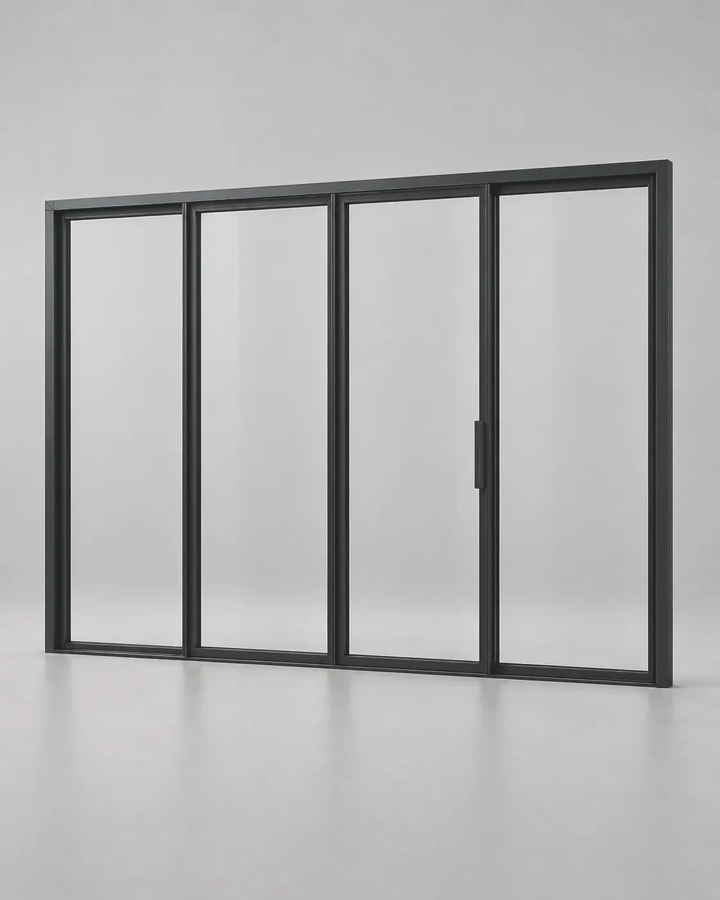

Скоро в продаже
Скоро в продаже
Складная дверь 2,7 м
Сообщить о старте
Скороцена — к старту продаж
FS · складная система
Готовим линейку складных порталов для проёмов, где важно открыть почти всю ширину фасада. Пока можно посмотреть принцип работы и обсудить проект с инженером.
Скоро в продаже

Скоро в продаже